Wearable · Coaching
Find Your Form with a co-branded smartwatch
Sync Under Armour's shoes with Samsung's watch to create a connected coaching experience based on real-time data.
Background
Building on foundations
Our work with Samsung began in 2014 when Samsung released a line of fitness-tracking wearable devices, wanting to counter the Apple and Nike partnership dominating the fitness tracking space at the time. We released wearable versions of our apps UA Record, MyFitnessPal, Endomondo and MapMyRun on their flagship devices, as well as some custom watchfaces.
I took over as lead designer in 2018, implementing improvements to the fitness tracking experience in MapMyRun and helping finalize new custom watchfaces. It was around this time that Under Armour's connected footwear and Form Coaching feature were starting to show promise in attracting and retaining users, so we decided to overhaul the MapMyRun app on Samsung's family of wearable devices — with a focus on connected running shoes and coaching features.
Vision
Aiming for the ultimate connected coaching experience
MapMyRun on the watch was meant to be experienced while running — and sometimes while running fast. Our goal was to get you connected and going, focusing on the small interactions and indicators that let you know you were good-to-go. We wanted the watch to auto-detect your shoes, and allow you to quickly choose your specific activity, offering form and fitness coaching on your first run. Launch the app, press START, and go.
We wanted continuous scanning so your shoes were always in-sync, data-smoothing so we didn't over-coach on every little bump in the road, and easy syncing so you never lost sight of your goals. The only way to make it work so seamlessly was to build our own watch together. What started as a software project quickly scaled up to a co-developed, co-branded Galaxy Watch Active2 Under Armour Edition — announced at Samsung's Unpacked developer conference in August of 2019, and released in October of the same year.
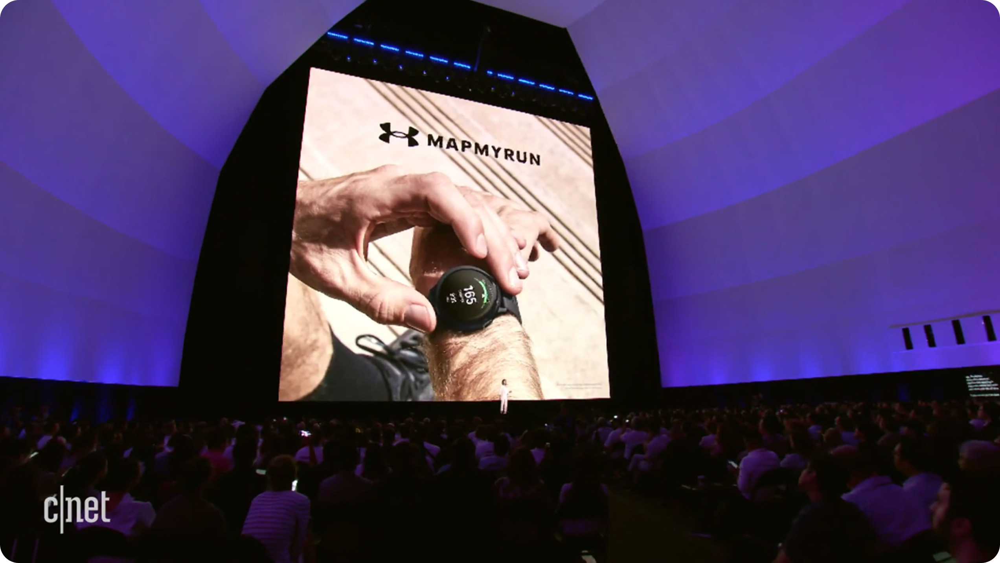
Samsung Unpacked — UA Form Coaching debut on the Galaxy Watch Active2 · via CNET
Hardware + Software
Hardware 🤝 Software
We worked very closely with Samsung's device engineers to develop the data sensors on the Galaxy Watch Active2. Engineers and product managers from Korea would often travel to our Austin, TX facility to work with our device engineers and exercise scientists to fine-tune the device's heart rate, GPS and accelerometer. This was an amazing opportunity to optimize our data sampling and coaching experience, giving us the ability to provide incredibly responsive tips and updates while running.
Multiple testing sessions resulted in the most accurate consumer-level fitness tracking device available at the time. As device and engineering teams worked on the hardware integrations, I kicked off visioning for the MapMyRun experience — including the connected footwear sync and form-coaching feature.
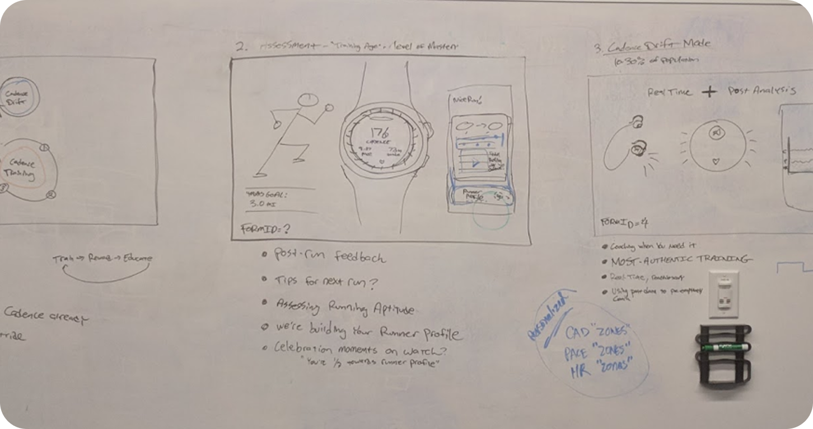
Early brainstorming — getting the coaching flow mapped out
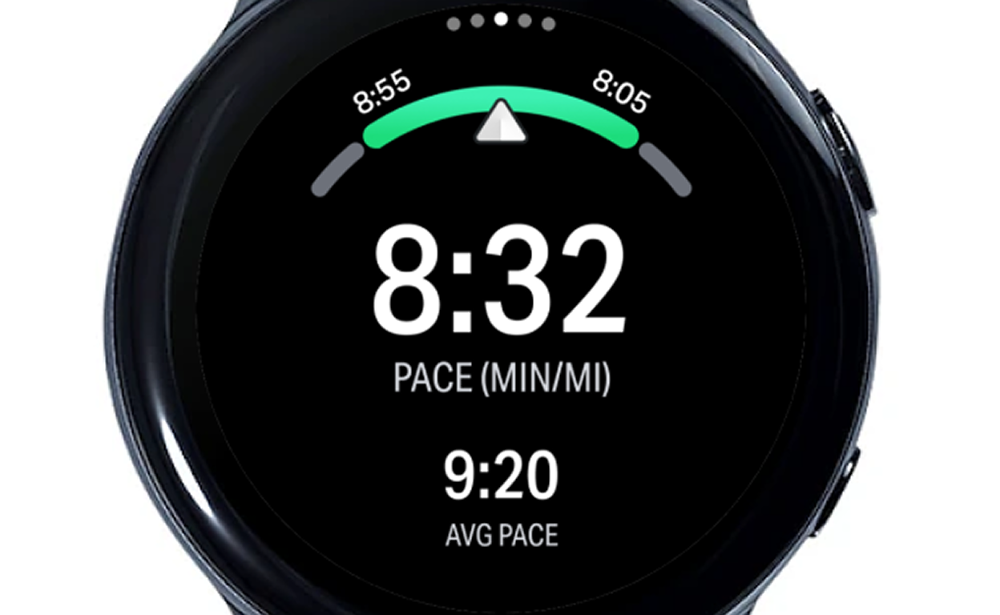
Shoe connection dropdown — matching the pair on your feet
Design System
Systems-led design
I began building out our own Samsung UI Kit for the MapMyRun app on the Galaxy Watch, hoping to leverage Samsung's OneUI design system for the overall look and feel — only introducing custom elements when necessary. Using the inherent system UI for the basics meant users weren't forced to learn new interactions and UI elements while mid-run. Our buttons were the same size, shape and position as the system OS buttons; our transitions followed the system UX, doing exactly what you expected when you interacted with them.
This allowed us to build out basic versions of the entire app quickly, freeing up time to focus on the unique moments where Under Armour and MapMyRun could shine.
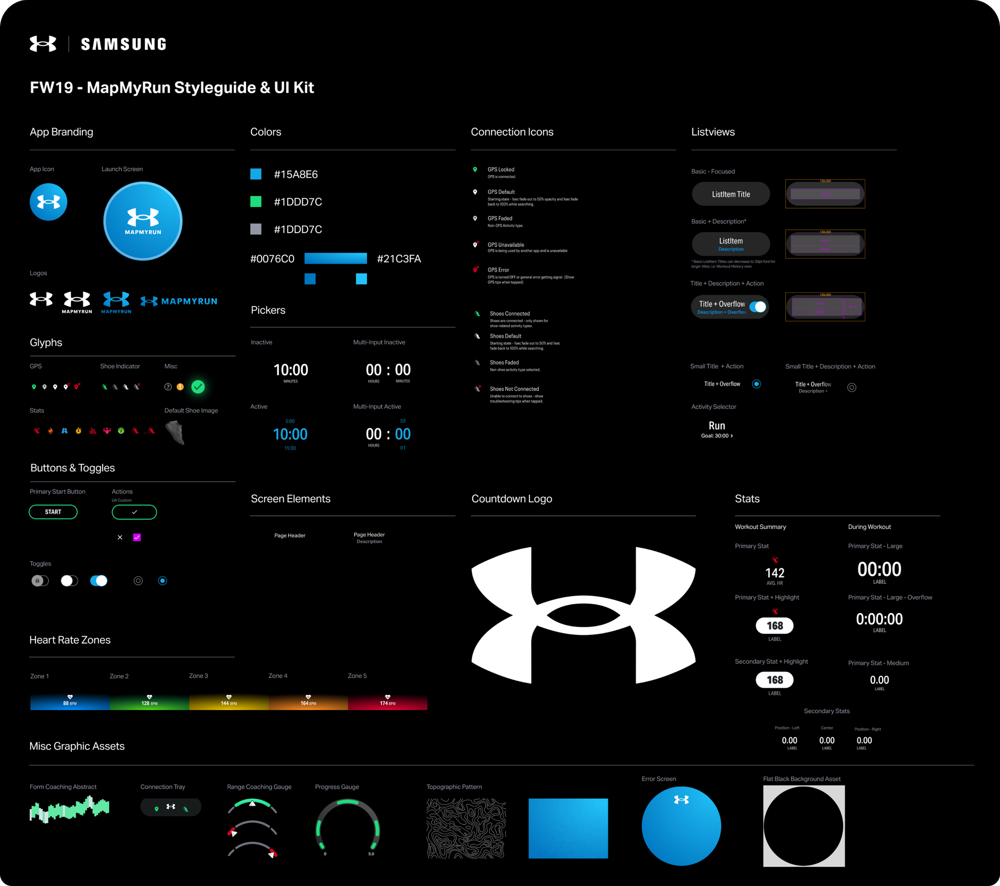
UI Kit for MapMyRun on the Samsung Galaxy Watch
Documentation
Documenting the experience for stakeholder alignment
We packed a lot of features into a small screen, and coherently explaining them to stakeholders was paramount. I created flow documents for all use cases, highlighting the visual, audio and haptic experiences in easy-to-read documents. This helped everyone from engineering to marketing to customer happiness understand the intent of a given feature, keeping us all on the same page throughout development.
Onboarding users was a particularly tricky process — two physical products needed to connect across multiple software products to communicate with each other. There were several pain points and failure potentials that could lead to an overall dissatisfaction with the experience, resulting in low ratings and returned products. This was an absolute non-starter. Using detailed documentation, we were able to identify opportunities to smooth out the experience and provide fallbacks when things did go awry.
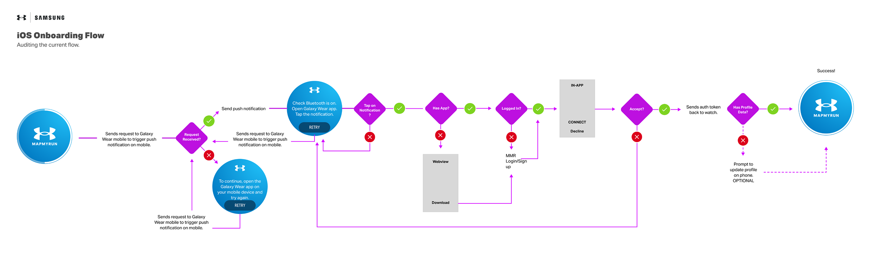
One of many detailed user flow documents
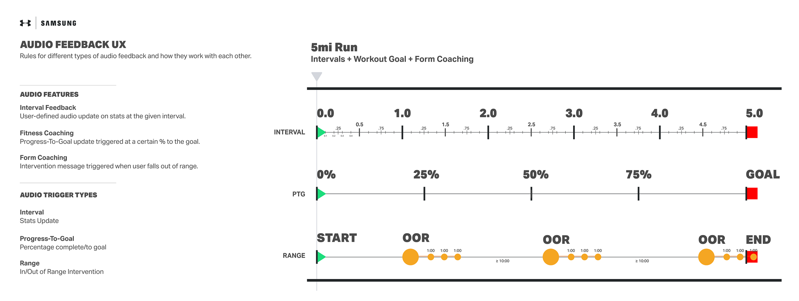
Audio feedback — timing of coaching alerts on a typical 5mi run
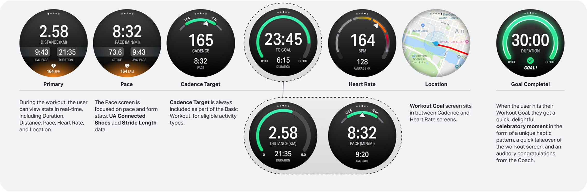
Detailed reference — in-workout experience screens
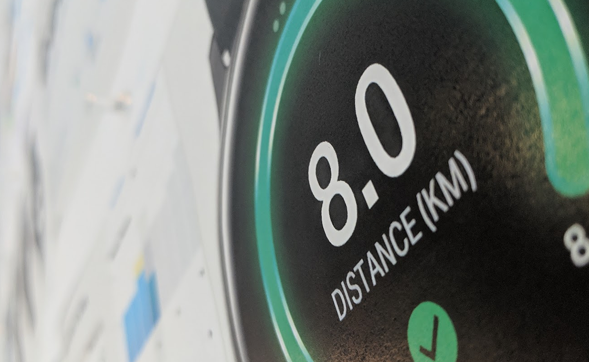
Many decks were created and presented to stakeholders
Experience
Keeping the runner motivated
One of our primary principles was to always celebrate the athlete, no matter their goal or performance. You could be aiming for your first mile or your fastest pace, and we'd cheer you on the entire time just for trying. The Progress-to-Goal interface used a hi-viz green gauge and big bold stats, keeping you motivated and informed throughout your run.
The Pace and Form Coaching gauge only alerted you when you fell outside a generously wide range from your stated goal — using gentle haptics, minimal negative feedback, and incredibly useful coaching tips to get you back on track. Hitting your distance or duration goal triggered a brief celebratory moment, then went right back to tracking and coaching, allowing you to keep going if you felt the motivation to.
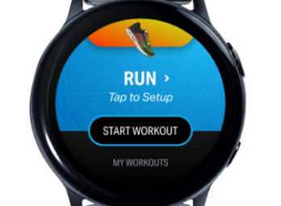
Start screen
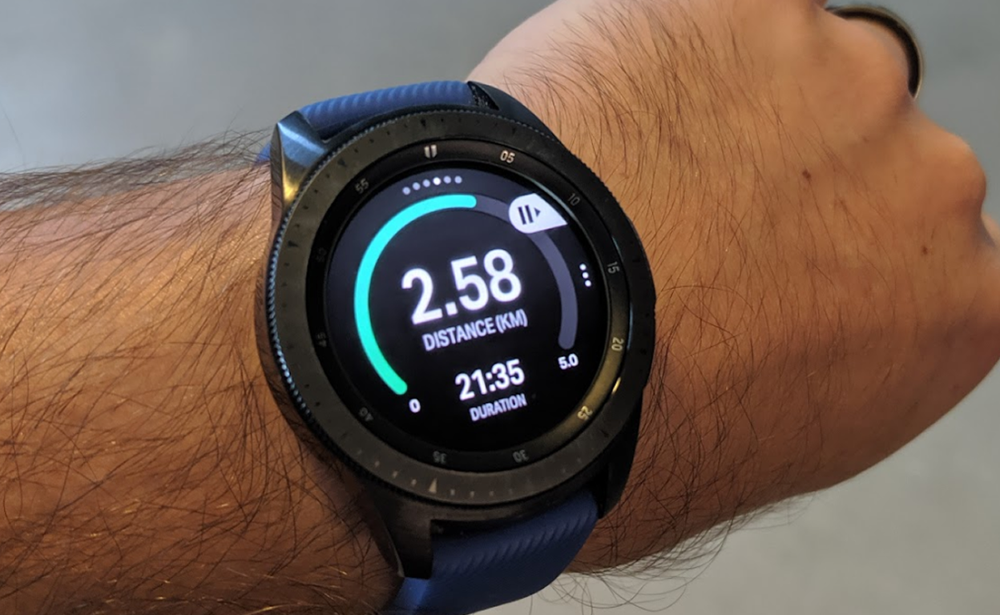
In-workout — on wrist
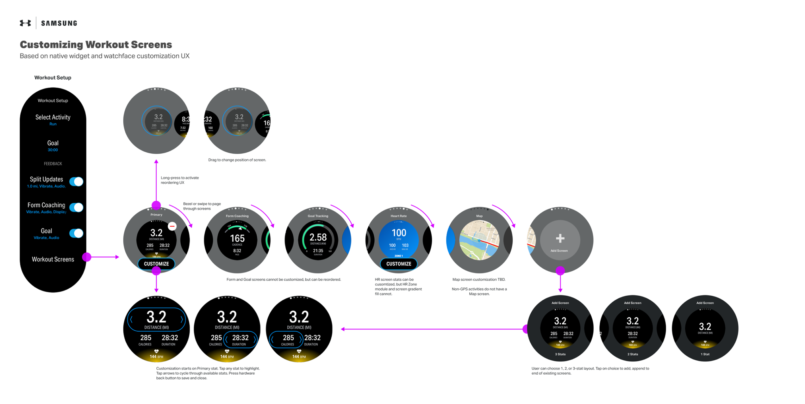
Customize workout screens
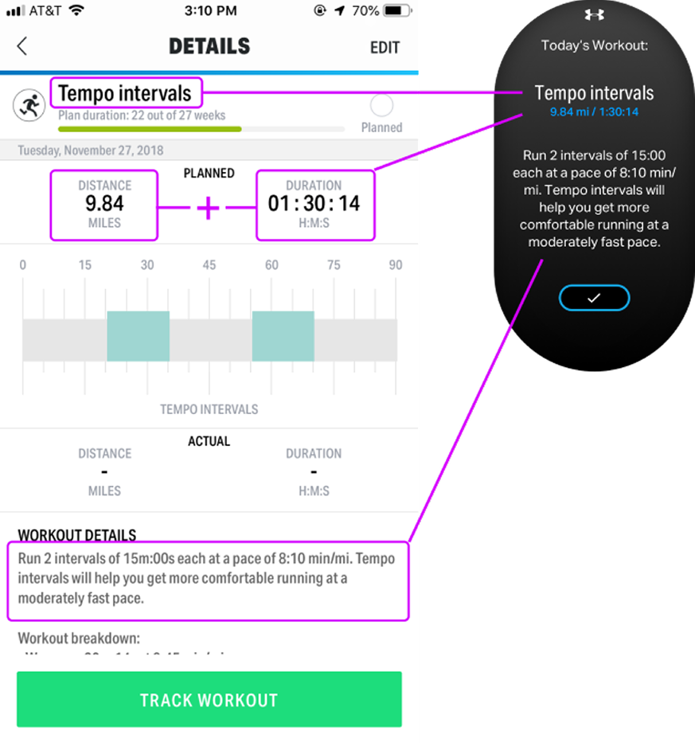
Training Plans — pre-set workout reminders synced to your watch
Marketing
Marketing the watch
We partnered with noted agency We Are Royale to produce promotional videos and marketing stills for the watch, including the announcement reel shown at the developer conference. I contributed to the art direction, providing UX and UI guidance for on-wrist mockups.
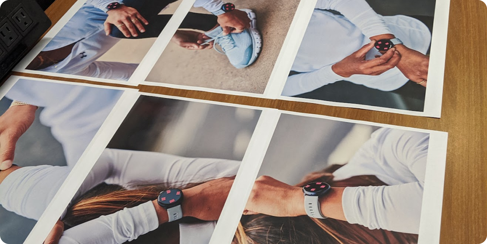
Marketing stills — device orientation for UI overlays
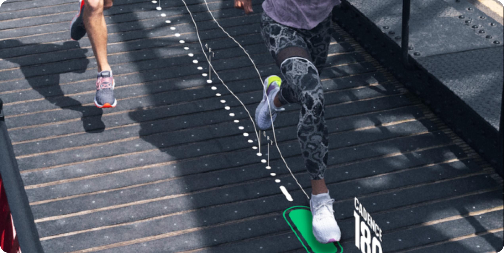
Form Coaching visual concept — We Are Royale
Outcome
Final product
The Samsung Galaxy Watch Active2 Under Armour Edition was released in October of 2019, alongside a collection of upgraded wearables by Samsung. In hindsight, releasing competing products simultaneously was a miscalculation — sales, while steady, fell short of expectations despite a high-quality marketing push.
Our Form Coaching feature, on the other hand, was very successful. We quickly ported it onto the mobile app and eventually onto Garmin devices as an optional third-party data screen.
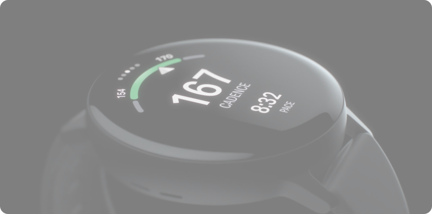
Samsung Galaxy Watch Active2 Under Armour Edition — October 2019